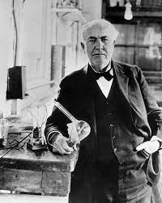

General Aung San(February13-1915)-(July19-1947)
Wife -Daw Khin Kyi
Age - 32
Born - Myanmar
Mahatma Ghandi(October 2, 1869)-(January 30, 1948)
Age - 78
Born -India
Abraham Lincoln(February 12, 1809)-(April 15, 1865)
Age - 56
Born -United States

Thomas Alva Edison(February 11, 1847)-(October 18, 1931)
Age - 84
Born -United States
Oo Thant(January 22, 1909)-(November 25, 1974)
Age - 65
Born -United States
Louis Braille( January 4, 1809)-(January 6, 1852)
Age - 43
Born -Franch
Daw Aung San Su Kyi(State Counsellor of Myanamr)(June 19, 1945)-
Current Age - 76
Born -Myanmar
Mother Teresa(August 26, 1910)-(September 5, 1997)
Age - 87
Born - North Macedonia
Daw Mi Mi Aung(1968)-
Current Age - 53
Born - -United States